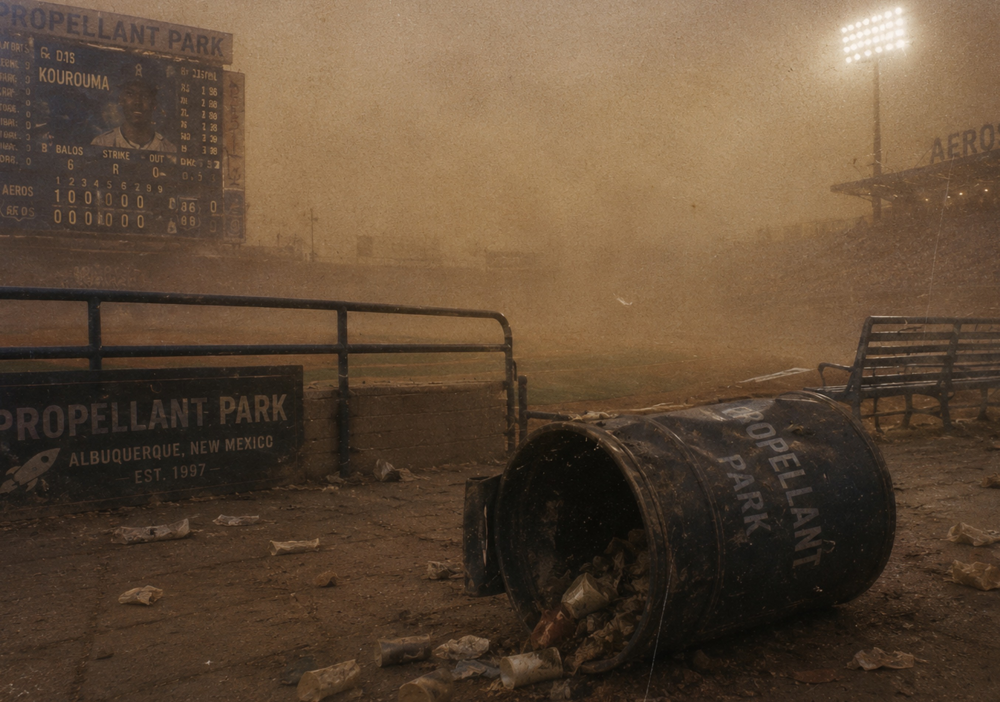

Park Overview
Propellant Park sits on the eastern edge of Albuquerque’s public transit corridor, where stadium lights are visible through dry evening air long before the gates appear. The park is known less for luxury than for atmosphere: warm metal railings, vendor smoke, dust on the lower concourse, and the peculiar hush that settles over the crowd during late innings.
Aeros supporters often describe the park as sounding larger than it looks. Radio calls, hand-cranked noisemakers, warning-track footsteps, and the low hum of the outfield fixtures are all part of the venue’s public memory.
Recorded Moment

OLR Partial Broadcast Recovery: overturned concourse receptacle during the Southwestern Dust Event.
The image is frequently associated with the seventh inning later remembered by supporters as
“The Long Inning.”
Southwestern Dust Event